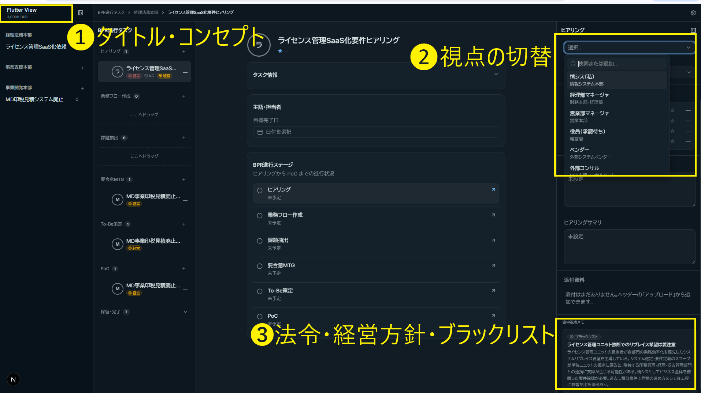

BPR Project management Tool
Flutter

メタ認知〜主語が切り替わる世界〜
3,000ft BPR
メタ認知〜主語が切り替わる世界〜
地上視点（感情・属人・個別判断）を空中視点（法令・業界標準・内部統制による客観的事実）に変換し、社内の構造的課題をメタ認知的に可視化する。
解決する課題：
BPR business process reengnieeringで「メタ認知的」なものの見方皆ができるようにする。
メタ認知的とは、客観性の強いものの見方。皆がメタ認知的に業務課題に取り組めれば衝突は起きにくい。
工夫した点：
BPRは時に協力が得られにくかったり、変化への抵抗に直面する、手段ありき(特にシステムありき)になり本質を見失いがち。「批判」ではなく「状態」
「犯人」ではなく「ボールの所在」
「主観」ではなく「客観」
開発する意味： 既存サービスのRedmine、Backlog、Asana、Trello等では実現できない、「視点の切替」を「俯瞰（Flutter-view）」することに重点を置きます
苦労した点： プロジェクトマネジメントツールは多数の製品・サービスがすでにあるため、自分が欲しくかつ既存のツールではカバーできないことを言語化しビジュアル化するのに時間を要しました
採用管理サンプルの「部署→候補者→詳細→ステージ」を「要チェック業務→業務システム→BPRタスク→空中視点メモ」に置き換えた道A踏襲ルート。
← Pane 1選択 → Pane 2に関連システムが連動（n:m） ／ Pane 2 or Pane 3選択 → Pane 4に根拠が連動
Flutter View の現在の画面（ダークモード）。4ペイン構造で業務改善をメタ認知的に管理する。

各BPRタスクが「何に照らして重要か/NGか」を色とアイコンで自動可視化。マウスオーバーで根拠タイトルがツールチップ表示される。
| バッジ | 色 | アイコン | 発動条件 |
|---|---|---|---|
| ⚖ 法令 | 赤 | Scale（天秤） | contextNote: 法令リスク |
| 🛡 統制 | 橙 | ShieldAlert | contextNote: 内部統制 |
| ⚠ 慣行 | 黄 | AlertTriangle | contextNote: 業界慣行 |
| 🚫 NG | 灰 | Ban | contextNote: ブラックリスト |
| 🎯 経営 | 橙 | Target | managementPolicies.json に記載 |
※ バッジにマウスオーバーで根拠タイトルのツールチップが表示される
サーバーサイドでZodスキーマ検証後にWorkspaceコンポーネントへ渡すシードデータ。実装完了後にAPIやDB接続に差し替え予定。
App Router / React 19 / TypeScript strict
@theme CSS変数でトークン一元管理
base-nova / @base-ui/react ベース
実行時型検証 / スキーマ駆動型定義